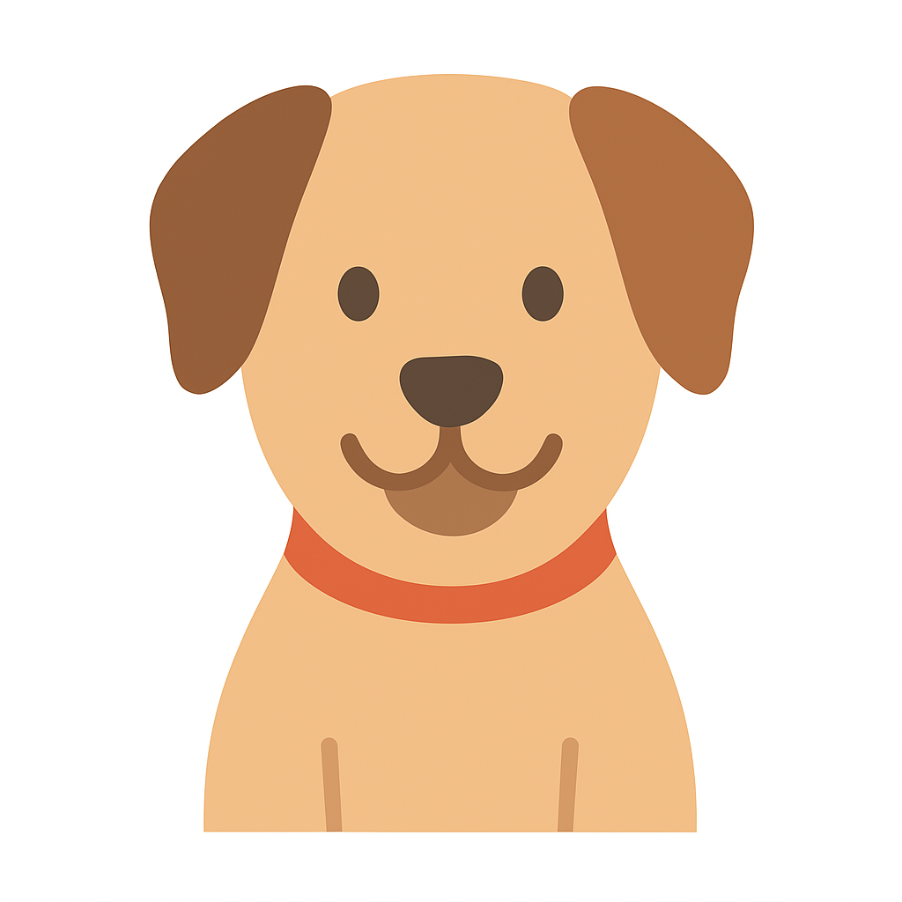

Volunteer in Tunisia

Association : Go Volunteer Africa
Lieu : Tunis, Tunisie
Horaires : Semaine (journée et soirée)
Participez à des initiatives éducatives et communautaires dans les quartiers de Tunis. Vous aiderez à l’enseignement, à la formation des jeunes et à l’animation d’ateliers culturels.
Human Connection Volunteer

Association : Acquaint
Lieu : En ligne
Disponibilité : Flexible (participation à distance possible)
Rejoignez un programme d’échanges culturels pour aider à créer des liens humains à travers des conversations internationales et des activités linguistiques en ligne.
Nettoyage de Plage

Association : Bleue Tunisie
Lieu : La Marsa, Tunis
Date : 15 novembre 2025
Aidez-nous à préserver la beauté des plages tunisiennes en participant à une journée de nettoyage et de sensibilisation au respect de l’environnement.
Éducation pour Tous
Association : Teach4Tunisia
Lieu : Kairouan
Période : Février - Juin 2026
Contribuez à l’éducation des enfants défavorisés en soutenant des programmes d’alphabétisation et de tutorat scolaire.
Reforestation Locale

Association : Green Future
Lieu : Nabeul
Date : 10 décembre 2025
Participez à une campagne de plantation d’arbres pour restaurer les zones dégradées et sensibiliser la communauté à l’écologie.
Aide aux Animaux

Association : SOS Animaux Tunisie
Lieu : Ariana
Disponibilité : Week-end
Impliquez-vous dans la protection animale en aidant les refuges locaux à s’occuper des animaux abandonnés et maltraités.